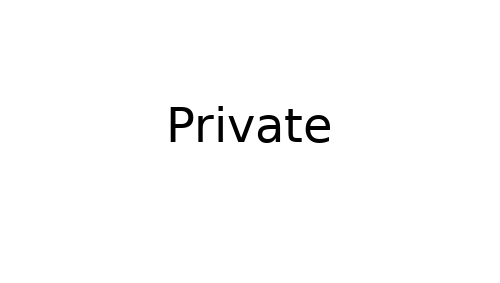

Accueil > Oral
Oral
Cette rubrique a été créé après l’oral du TPE (début juillet). Elle a pour but de partager notre oral de TPE pour pouvoir montrer un exemple.
Consigne
A l’oral du TPE, on nous demande de présenter un point précis du TPE. Il faut que la problématique soit toujours présente.
Nous avons donc décidé d’étudier la propulsion, et plus précisément, la propulsion à eau. Nous avons alors fait une comparaison théorie / pratique :
- En créant une fusée à eau [1], en intégrant un microcontrôleur qui a pris des mesures.
- En utilisant différentes lois de la physique pour déterminer la vitesse... de la fusée à partir du moment où il n’y a plus d’eau.
Diaporama
La page de présentation. Pour la faire, nous avons créé un modèle PowerPoint.
C’est la méthode la plus propre et la plus réutilisable. En tout, nous avons 3
modèles : présentation, sommaire et slide. Vous pouvez observer que notre problématique
est légèrement pas en rapport avec la fusée à eau, ce que l’on nous a
reproché.

Introduction
Cette partie permet de faire le lien avec le TPE. On explique les différences et pourquoi on
a fait une fusée.

Partie 1 : Conception et lancement
On a donc conçu une fusée à eau pour mesurer l’accélération et la hauteur en fonction du temps, pour ensuite comparer avec la théorie gravitationnelle.
Dans ce slide, nous avons fait plaisir au professeur de SI en lui mettant un diagramme FAST FAST Function Analysis System Technique est un diagramme qui présente les fonctions de service d’un système. ,
permettant de mettre en valeur les fonctions attendu par notre système. Nous avons ensuite
montré les composants que nous avions choisit d’acheter.
Pour créer la fusée, nous avons pris deux bouteilles d’eau gazeuse. Nous avons récupérer
le fond d’une des deux pour y installer l’Arduino, la batterie et les capteurs grâce
à un anneau modélisé en 3D. Il suffisait juste d’emboiter les deux
bouteilles pour créer une fusée à eau minimaliste.

Nous avons décider de créer un petit film de l’expérimentation, en faisant
apparaitre les mesures. Il n’est pas encore disponible sur le site, mais cela va bientôt
arriver.

Partie 2 : Capture des données

Partie 3 : Théorie


Comparaison & Conclusion